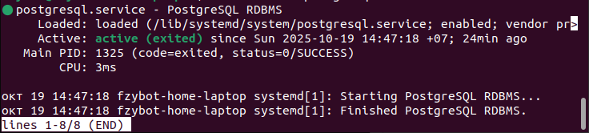
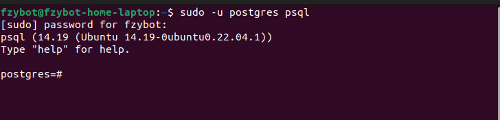
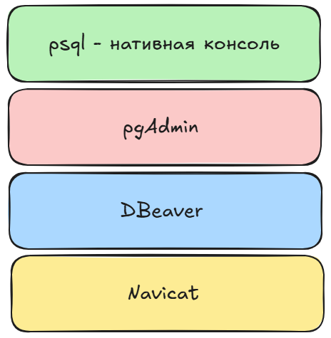
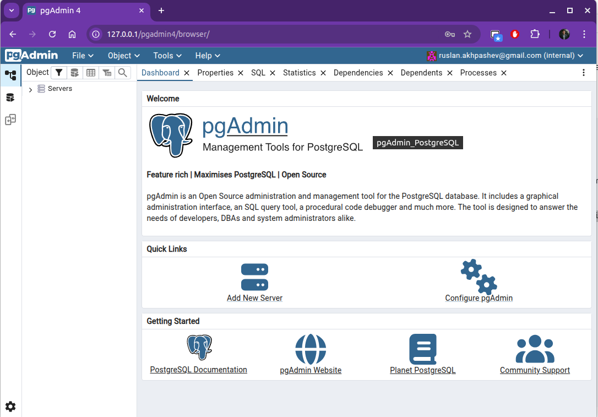

PostgreSQL (Основы)
Установка
Устанивливаем с официального сайта.
Ubuntu
Ubuntu поддерживает приложение postgresql в виде “установочных” пакетов. Есть возможность установить разные версии.
sudo apt-get install postgresql # по умолчанию установится 14 версия
ЕСЛИ хотим более новую версию:
sudo apt install -y postgresql-common
sudo /usr/share/postgresql-common/pgdg/apt.postgresql.org.sh
sudo apt update
sudo apt install postgresql-18
После установки желательно проверить запущен ли сервис postgresql:
sudo service postgresql status
Должны увидеть:

Управлять работой сервиса можно при помощи команд:
sudo service postgresql start # запуск
sudo service postgresql restart # перезапуск
sudo service postgresql stop # остановка
Важно отметить, что postgresql позволяет, так называемый, peer - доступ. Это позволяет получать доступ к СУБД от Вашего пользователя (под которым приложение было установлено).
При установке на ваш компьютер, приложение, по умолчанию, создаст пользователя postgres (без пароля, но имеющего доступ к серверу СУБД).
Первым делом, нужно задать пароль для пользователя, чтобы в дальнейшем мы могли работать с СУБД.
Подключаемся к СУБД под
sudoс флагом-u <имя пользователя>:
sudo -u postgres psql # postgres - пользователь, который был создан по умолчанию
Мы увидим новую консоль
psql:

Далее меняем пароль для пользователя postgres командой:
\password postgres
Номер порта для подключения к СУБД можно найти в файлах конфигурации (по умолчанию port = 5432):
cat /etc/postgresql/18/main/postgresql.conf
Работает!
Подключение к СУБД
Работать с системой управления базой данных можно при помощи приложений:

psql- нативная консоль;pgAdmin- Open-source приложение по управлениюPostgreSQlпри помощи графической оболочки;DBeaver- аналогично второму варианту, ссылка;Navicat- тоже визуальный интерфейс для управления СУБД.
psql
psql - это нативный метод взаимодействия с СУБД. Устанавливается по умолчанию.
При помощи консоли происходит взаимодействие с сервером PostgreSQL.
-u <user_name> - это имя пользователя.
sudo -u postgres psql
pgAdmin
Установка pgAdmin
# Установка открытого ключа для репозитория
curl -fsS https://www.pgadmin.org/static/packages_pgadmin_org.pub | sudo gpg --dearmor -o /usr/share/keyrings/packages-pgadmin-org.gpg
# Создаем файл конфигурации репозитория
sudo sh -c 'echo "deb [signed-by=/usr/share/keyrings/packages-pgadmin-org.gpg] https://ftp.postgresql.org/pub/pgadmin/pgadmin4/apt/$(lsb_release -cs) pgadmin4 main" > /etc/apt/sources.list.d/pgadmin4.list && apt update'
#
# Установка pgAdmin
#
# Install for both desktop and web modes:
sudo apt install pgadmin4
# Install for web mode only:
sudo apt install pgadmin4-web
# Настройка, если хотим работать в вебе pgadmin4-web:
sudo /usr/pgadmin4/bin/setup-web.sh
В результате, после настройки setup-web запуститься сервер pgAdmin по адресу: https://127.0.0.1/pgadmin4 (вход по email + пароль, введенный при установке):
